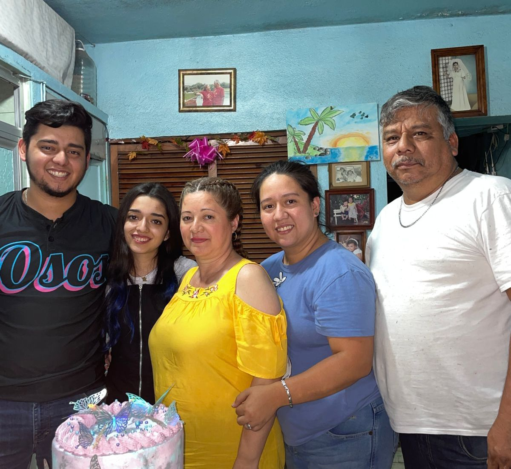
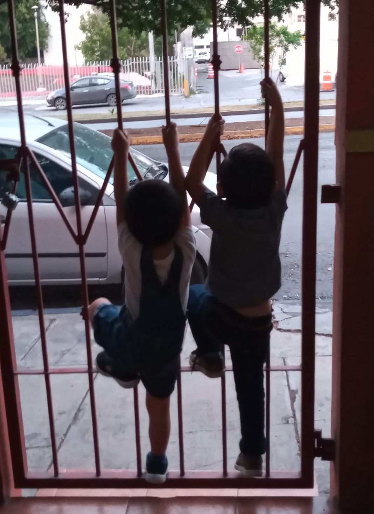
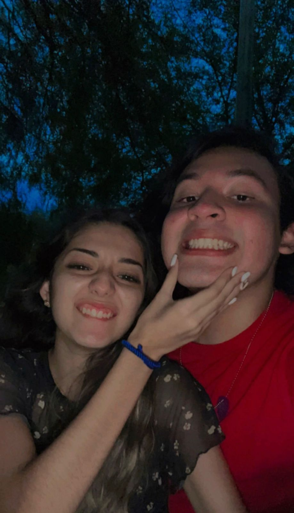
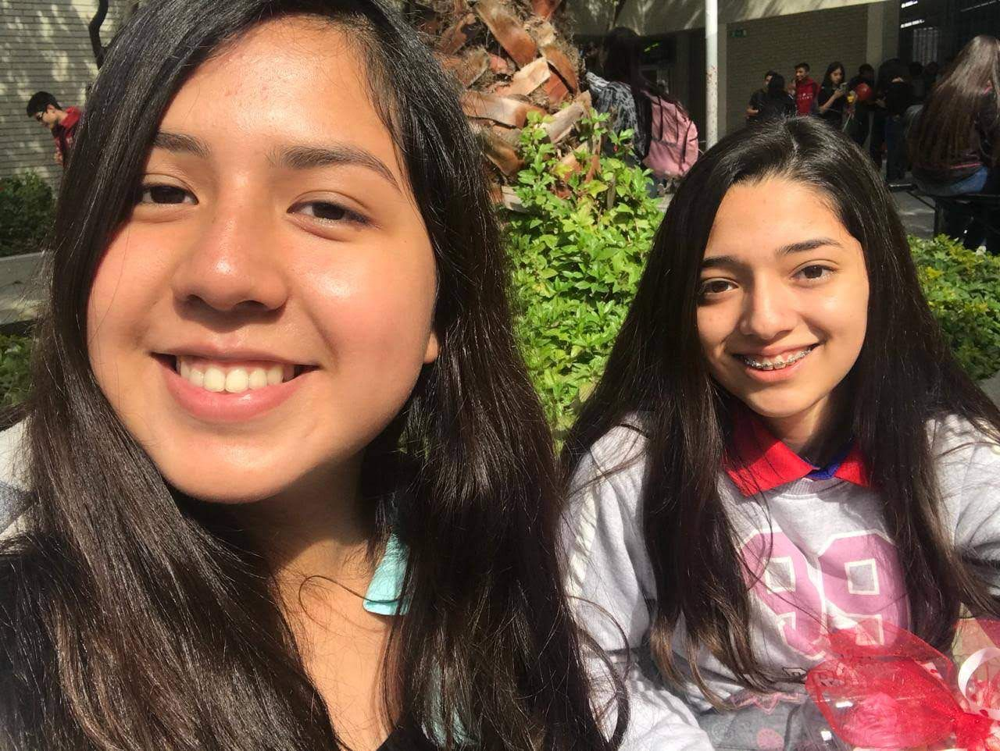

Mi nombre es Citlalli Mariana González Hernández, me gusta más que me hablen por mi segundo nombre. Nací el 16 de abril del 2003
en Monterrey, Nuevo León. Actualmente tengo 19 años y estudio el 5to semestre de la carrera Licenciado en Tecnologías de Información,
en la Facultad de Administración y Contaduría Pública de la Universidad Autónoma de Nuevo León.
En mi familia somos 5 personas. Mi papá es Arquitecto y tiene 54 años, mi mamá tiene 51 años y siempre ha cuidado niños,
mi hermana mayor actualmente tiene 31 años, es maestra, tiene 5 años casada, un hijo y está esperando otro
bebé que aún no sabemos si será niña o niño, luego sigue mi hermano que tiene 25 años, actualmente trabaja
en un hospital y tiene un hijo y, yo soy la hermana menor.

Tengo dos sobrinos niños con los cuales tengo una muy bonita conexión y ambos me quieren tanto como yo los quiero a ellos; Javi es mi primer
sobrino, tiene 4 añitos y está cursando su 2do año de preescolar, le gustan mucho los dinosaurios y los carritos. Danilo es mi segundo sobrino,
tiene 3 añitos, le gusta mucho jugar con agua, está en natación y durante un tiempo estuvo en beisbol. Actualmente estoy esperando el
nacimiento de mi tercer sobrino, hermanito de Danilo que aún no sabemos que será pero deseamos que sea niña.

Mi novio se llama Alejandro, tiene 19 años casi 20, estudia Medicina. Le gustan mucho los carros y tocar guitarra.
Nuestra historia es algo extraña pero no deja de ser bonita, nos conocimos en 2021 en tiempo de pandemia. Aunque fue un tiempo dificil
por no poder vernos, pudimos conocernos después de dos meses, y dos meses después de conocernos, nos convertimos en novios. Somos completamente
distintos pero nos complementamos muy bien y somos muy felices estando juntos.

Mi mejor amiga se llama Kathia, me gusta decirle Kathia's. Nos conocimos en primer semestre de prepa en el 2018 y desde entonces hemos sido muy
buenas amigas, nos contamos todo y es de las pocas personas en quien más puedo confiar. Estudia Actuaria en la Facultad de Ciencias Físico Matemáticas de la UANL.
